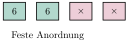
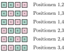
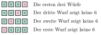

Aufgabe 7.1
Ein Würfel wird vier Mal hintereinander geworfen. Man bestimme die Wahrscheinlichkeit der Ereignisse
- «in den ersten beiden Würfen je eine Sechs, sonst nicht»,
- «genau zwei Sechsen»,
- «genau drei Sechsen».
- Die Wahrscheinlichkeit für eine Sechs ist $\frac{1}{6}$, für keine Sechs $\frac{5}{6}$
- Zählen Sie systematisch alle möglichen Anordnungen
| Gegeben | Gesucht |
| Ein fairer Würfel | Wahrscheinlichkeiten der drei Ereignisse |
| Vier Würfe | $P(A)$, $P(B)$, $P(C)$ |
| $p = \frac{1}{6}$ für eine 6 | $X$ = Anzahl der Sechsen |
Ereignis A: «In den ersten beiden Würfen je eine Sechs, sonst nicht»
Dies ist ein Ereignis mit fester Reihenfolge: (6, 6, keine 6, keine 6)

Ereignis B: «Genau zwei Sechsen»
Hier ist die Position der Sechsen beliebig. Wir müssen alle möglichen Anordnungen zählen.
Alle 6 möglichen Anordnungen:

Ereignis C: «Genau drei Sechsen»
Analog zu B bestimmen wir alle möglichen Anordnungen für drei Sechsen.
Die 4 möglichen Anordnungen:

Vergleich der Ergebnisse:
| Ereignis | Beschreibung | Anordnungen | Wahrscheinlichkeit |
| A | Feste Position (6,6,×,×) | 1 | 1.9% |
| B | 2 Sechsen beliebig | 6 | 11.6% |
| C | 3 Sechsen beliebig | 4 | 1.5% |
Im Video: Etappe 2 · Bernoulliketten bei 4:32